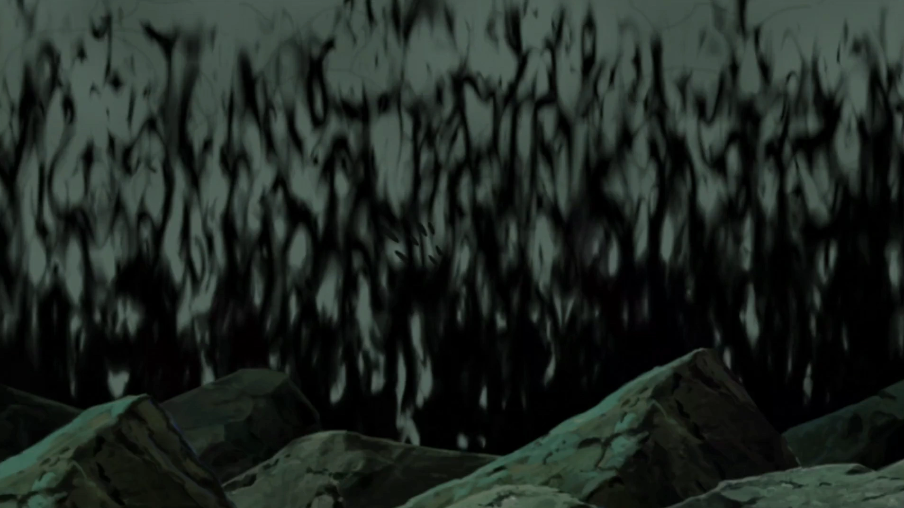
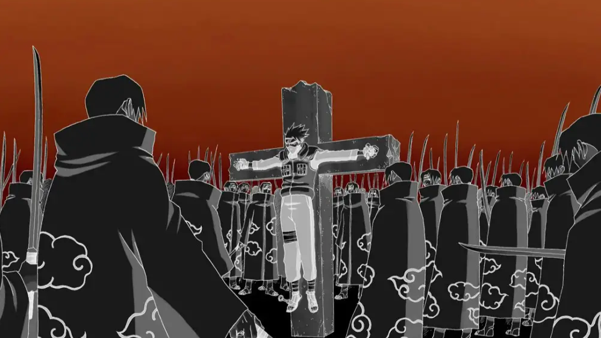
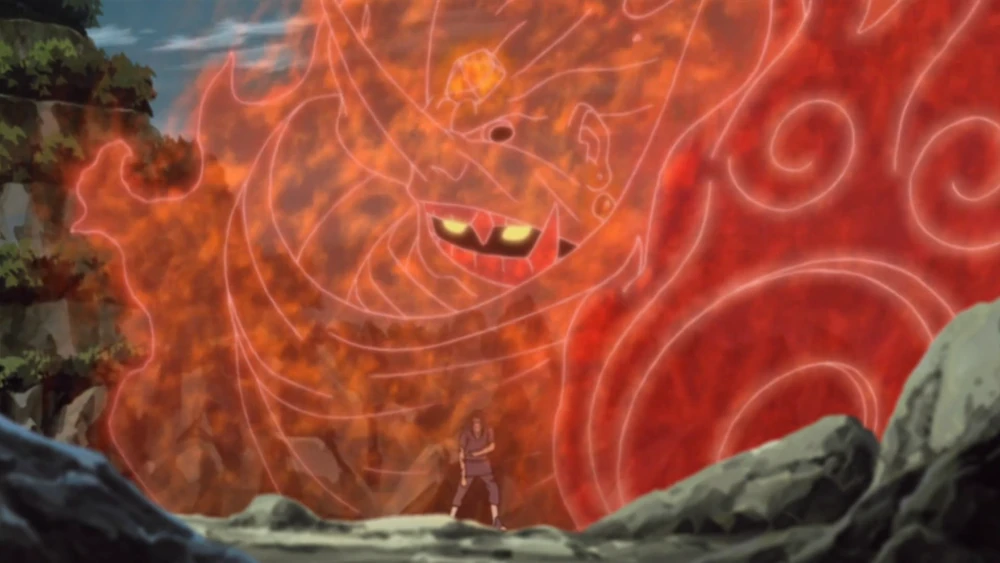

Itachi Uchiha (うちはイタチ, Uchiha Itachi) was a shinobi of Konohagakure's Uchiha clan who served as an Anbu Captain. He later became an international criminal after murdering his entire clan, sparing only his younger brother, Sasuke. He afterwards joined the international criminal organisation known as Akatsuki, whose activity brought him into frequent conflict with Konoha and its ninja — including Sasuke who sought to avenge their clan by killing Itachi. Following his death, Itachi's motives were revealed to be more complicated than they seemed and that his actions were only ever in the interest of his brother and village, making him remain a loyal shinobi of Konohagakure to the very end.
1. Amaterasu

With his right eye, Itachi could use Amaterasu, igniting whatever he looked at with black flames that would burn anything, including fire itself, and at his own will extinguish Amaterasu.
2. Tsukuyomi

After making eye contact with a target, Itachi Uchiha traps them in an illusion of his design. Through his unprecedented ability to alter targets' perception of time, he uses Tsukuyomi to subject victims to days' worth of torture in a matter of seconds; examples include continual stabbing or reliving traumatic events over and over. Tsukuyomi's illusions are usually represented as an inverted grey scale; in the anime, there is usually also a red moon in a red sky. Because of the power of the Mangekyō Sharingan and the speed with which Tsukuyomi works, normal methods of countering genjutsu are ineffective against it.
3. Susanoo

Having awakened the Mangekyō in both his eyes, Itachi could also use Susanoo. With its simplest manifestations, he could produce extra arms or bones to improve his options in a fight. When used in full, Itachi was surrounded by a spectral warrior that would protect him from damage. In addition to the chakra swords and Yasaka Magatama common to all Susanoo, Itachi's Susanoo wielded the Sword of Totsuka – an ethereal sword with the ability to seal any person it pierced into its gourd—hilt – and the Yata Mirror – a shield that was said to reflect any attack by changing its chakra nature to counterbalance an attack. The simultaneous use of both weapons made Itachi's Susanoo essentially invincible.
4. Izanami
Itachi use Izanami(a forbidden Uchiha jutsu that creates a temporal loop, trapping a victim until they accept the reality of their situation) to break him out of the reanimation jutsu during the Fourth Shinobi World War. He used this forbidden genjutsu to force Kabuto to confront the reality of his own life and actions, trapping him in an endless loop of his own making until he accepted himself to break free.
For more information about Itachi Uchiha:
Click Here